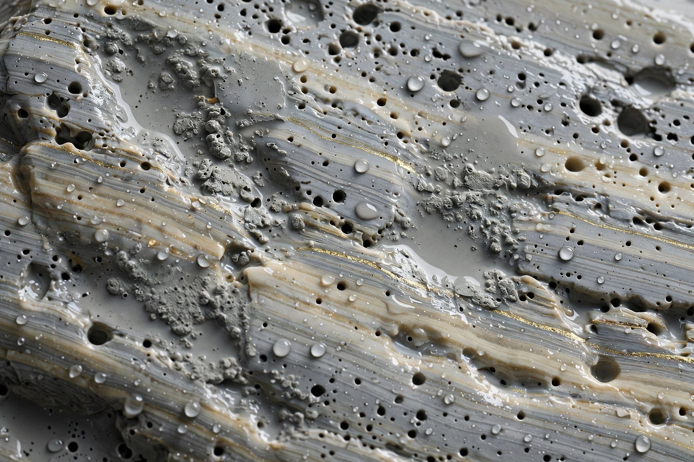

巣板とは ― 天然砥石の「層」の種類と見分け方

結論
巣板とは、天然砥石の地層（層）のうち、小さな穴＝「巣」がある層から採れた石の総称です。巣は欠陥ではなく層の個性で、浅く小さい巣は研ぎへの影響が小さいのが目安です。層の名前は硬さの傾向を知る手がかりになりますが、最終判断は一枚ごとの確認が欠かせません。
そもそも「層」とは何か
天然砥石の原石は、山の中に重なった地層から切り出されます。この地層の一つひとつが「層（そう）」と呼ばれ、深さや位置によって石の硬さ・色・模様が変わります。同じ山でも、どの層から採れたかで研ぎ味は大きく異なるため、産地名と並んで層の名前が石の素性を示す重要な目安になってきました。層の分け方や呼び方は山によって異なり、ここで紹介するのは東山系の仕上げ砥で一般に知られる範囲のものです。
主な層の種類と特徴
| 層の名前 | 特徴の目安 | 硬さの傾向の目安 |
|---|---|---|
| 本巣板 | 巣のある層の中でも良質とされる部分。きめが細かく評価が高いとされる | 中〜やや硬めのものが多いとされる |
| 巣板 | 巣（小さな穴）が表面に見られる層の総称。研ぎ汁が出やすいとされる | 軟らかめから硬めまで幅が広い |
| 天井巣板 | 巣板層の上部（天井側）から採れる石を指す呼称として知られる | 巣板に近い傾向とされる |
| 戸前 | 層の境目付近の石を指すことが多い。模様が出やすいとされる | 中程度のものが多いとされる |
| 内曇 | 霞仕上げの地肌作りに使われてきた層として知られる | 比較的軟らかめのものが多いとされる |
| 蓮華 | 表面に蓮の花のような斑紋（蓮華模様）が現れる石を指す | 石による差が大きい |
| からす | 黒っぽい斑紋がカラスの羽のように現れる石を指す呼称として知られる | 硬めの仕上げ向けが多いとされる |
表の硬さはあくまで傾向の目安です。層の名前が同じでも、山や採れる位置によって実際の硬さは変わります。蓮華やからすのように、層というより表面の模様の現れ方を指す呼称も混ざっている点も、天然砥石の用語のややこしさであり、面白さでもあります。
巣（穴）の見分け方と研ぎへの影響
良い巣と注意したい巣
- 小さく浅い巣：巣板らしい個性で、研ぎ汁の保持に役立つ面もあるとされ、通常の研ぎには支障が小さいのが目安です。
- 深く大きな巣：刃先が落ち込みやすいため、細かい仕上げでは避けたほうがよい場合があります。
- 巣と間違えやすい毒筋：刃を傷つける硬い筋（毒筋）は巣とは別物です。筋状に光る線や、研いだときに引っかかる感触がある場合は注意が必要です。
研ぎへの影響の考え方
巣があることで砥面が均一でなくなるのは事実ですが、その分、研ぎ汁（砥泥）が砥面にとどまりやすく、地肌を曇らせる霞仕上げではむしろ好まれることがあります。影響の大きさは、巣の深さ・大きさ・分布と、研ぐ刃物の幅によって変わります。幅の広い鉋や包丁では気になりにくい巣も、カミソリのような細かい刃先では影響が出やすい、というのが大まかな目安です。購入時は写真だけでなく、巣の深さや毒筋の有無を言葉で説明してもらえるかどうかも、見分けのポイントになります。
層や巣板の石を実際に探したい方へ
- 砥石データベースでは、層・産地・硬度・価格帯から巣板を含む石を横断検索できます。
- 鑑定済み砥石のご案内では、巣や筋の状態まで確認した石を取り扱う考え方を紹介しています。
- 巣の状態が気になる石がある方は、お問い合わせからご相談ください。
よくある質問
- 巣板の「巣」は欠陥ですか？
- 巣そのものは巣板という層の特徴であり、直ちに欠陥とは限りません。小さく浅い巣は研ぎに支障がないことが多いとされます。一方、深く大きな巣や、刃を引っかける筋（毒筋）が混じる場合は研ぎの妨げになることがあるため、深さと位置を見るのが目安です。
- 本巣板と巣板はどう違うのですか？
- 一般には、巣のある層の中でも特に質が良いとされる部分が本巣板と呼ばれてきたようです。ただし呼称の運用は販売者によって幅があり、名前だけで判断せず、硬さや研ぎ汁の出方など実際の性質を確認するのが目安です。
- 層の名前が分かれば硬さも分かりますか？
- 大まかな傾向の目安にはなりますが、断定はできません。同じ層でも山や場所によって硬さには幅があります。層名は参考情報として読み、最終的には個々の石の硬度表示やテスト記録で確認することをおすすめします。
- 巣板はどんな刃物に向いていますか？
- 研ぎ汁が出やすく地肌を作りやすいとされるため、和包丁の霞仕上げなどに使われることが多いようです。ただし硬い巣板は最終仕上げ寄り、軟らかい巣板は中仕上げ寄りと幅があるため、用途に合わせて硬さを選ぶのが目安です。